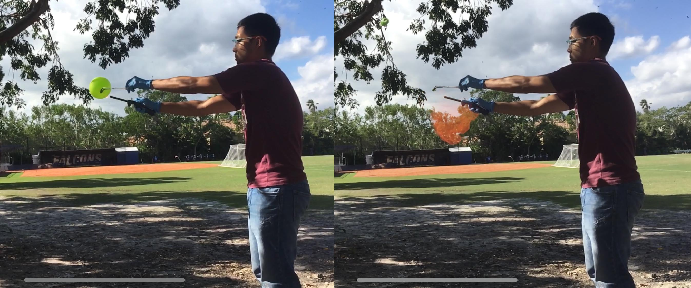

"The highest result of education is tolerance." -Helen Keller
Thank you for your interest in learning more about my professional experiences and philosophies. I am looking forward to speaking with you about possible opportunities and collaborations.
I have always asked the question "Why?" I wanted to know why the sky was blue, why certain objects smelled the way they do, and how the world worked. Science provided me with the answers to these questions.
I consider myself extremely fortunate to have been influenced by many outstanding teachers throughout my education journey. My middle school science teacher sparked my interest in science, and my high school chemistry teacher’s support and enthusiasm for science ultimately led me to choosing chemistry as a major in college. College gave me the opportunity to be mentored and work with with brilliant scientists that introduced me to new ideas, how to use knowledge to create solutions, and the responsibility of sharing what I have learned with the world. I take pride in my responsibility as an educator to not only teach my students about the wonders of science, but also treating each person in our classroom with respect, maintaining a positive attitude, perserverence, strength, and ultimately an eternal desire to never quit learning.
Acknowledgements go out to my parents and family for their everlasting love and support, and friends for showing me the joys in life.
Hydrogen Balloon Demo, Test the pH of different water sources, and making slime!
Minor: Anthropology
Organic Chemistry I/II, Biochemistry, Physical Chemistry I/II (Quantum Mechanics / Thermodynamics), Quantitative Analysis, Analytical Chemistry, Descriptive Inorganic Chemistry, Industrial Chemistry, Calculus I/II/III, Statistics, Physics I/II (Mechanics / Electricity & Optics)
Applied various methods to demonstrate science concepts adapted to fit individual student needs; formulated and wrote effective original lesson plans spanning a school year for three levels (8th grade physical science, 10th grade conceptual physics, AP Physics C); incorporated innovative technology into lessons to enhance and accelerate course mastery; encouraged problem solving and critical thinking skills by performing inquiry based labs
Lead organizer of an Universal Studios physics travel; coordinated a team of faculty to plan a hands-on field study for a group of 50, served as a point of contact between Universal Youth Programs and school; mitigated risks; directed teacher chaperones; students engaged in ride design program to spark interest and connect real world scenarios to lessons in class.
Mentored a group of 10 students through high school in Advisory and MOSAIC programs focused on inclusion, diversity, and effective learning strategies while serving as a liaison between students, parents, and the school.
Interpreted collected data, identified problems, and devised and executed experiments to create solutions
Researched synthesis and recyclability of tetraphosphine linkers with tetrakis(biphenyl)silane cores for immobilizing catalysts on silica
Researched synthesis, purification, and characterization of phosphine oxides and their hydrogen peroxide adducts
Wrote journal article summarizing research conclusions each semester and presented data during group meetings
Researched the synthesis and recyclability of tetraphosphine linkers with tetrakis(biphenyl)silane cores for immobilizing catalysts on silica
Participated in the summer REU program consisting of attending two weekly meetings, writing a journal article over completed research, and presenting a poster and talk over findings at two symposiums.
Worked 40+ hours a week in lab during the summer program, 6+ hours a week during school year
Directed a group of 30-40 kids ages 9-12 through daily activities and lesson plans
Skills: HPLC; GC; MS; FTIR; NMR; UV-Vis; X-Ray Crystallography; Powder Diffraction; X-ray Fluorescence Spectroscopy; Fluorescence; Organic Synthesis; Capillary Electrophoresis
Interests: When I am not in the classroom, I am staying active, running outside, and hiking with friends. My artistic interests include photography, graphic design, painting, guitar, and violin. Chess also fascinates me because the strategy involved in the game offers insight on both the minds of yourself and your opponent. I used to participate in spelling competitions throughout middle and high school because I loved discovering new words. One odd talent is that I can ride the unicycle. Currently, I am writing a science book series for toddlers dedicated to my niece.